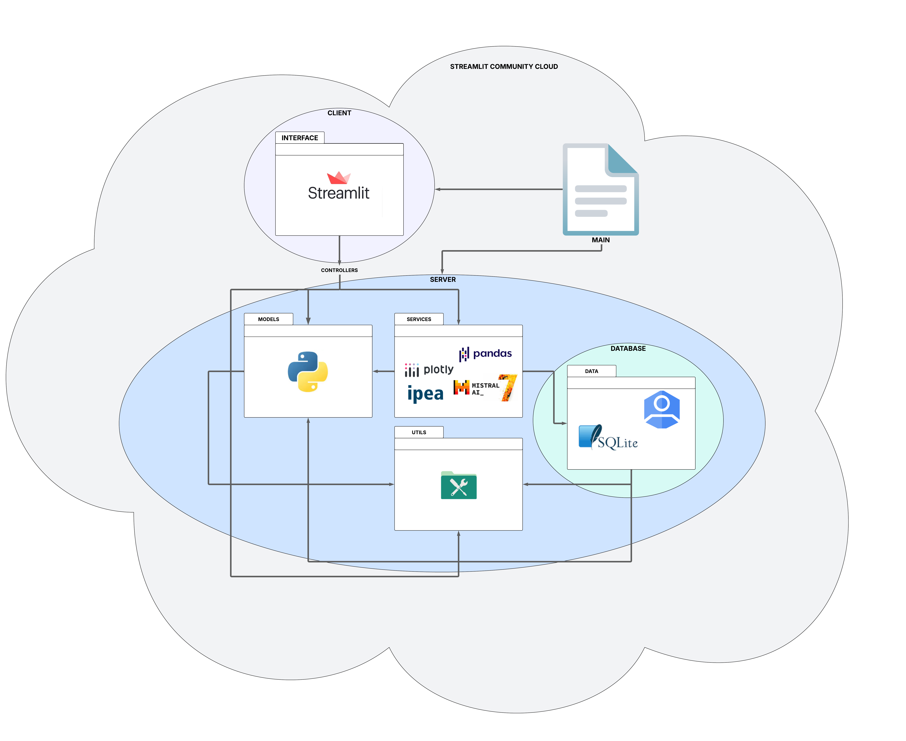
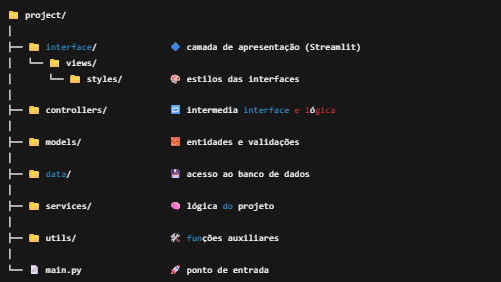

📊 GovInsights - Projeto de Geração Automática de Relatórios de Series Financeiras do IPEA
Este projeto tem como objetivo gerar relatórios financeiros automatizados sobre series financeiras do IPEA (Instituto de Pesquisa Econômica Aplicada) com base em dados de entrada fornecidos pelo usuário. A aplicação foi construída com foco em modularidade, escalabilidade e facilidade de manutenção, utilizando um modelo monolítico modular com aplicação de padrões arquiteturais de arquitetura em camadas e MVC.
🧱 Arquitetura do Projeto
Optamos por um modelo monolítico modular, baseado nos princípios de: - Arquitetura em Camadas - Padrão MVC (Model-View-Controller)
Essa estrutura organiza o sistema em módulos claros e independentes, permitindo que cada parte seja evoluída de forma coesa e sustentável, com baixo acoplamento e alta coesão.
-
Banco de Dados
- Login de Usuários: A autenticação é realizada através do Google Identity, garantindo uma forma segura e prática para os usuários se autenticarem.
- Histórico de Relatórios: O histórico dos relatórios gerados será armazenado no banco de dados local SQLite, proporcionando uma solução leve e eficiente para o armazenamento dos dados.
-
Frontend e Backend
- Frontend: A interface do usuário é construída utilizando Streamlit, garantindo uma experiência interativa e visualmente atraente.
- Backend: A lógica de negócio, manipulação de dados de series do IPEA e integração com IA (Mistral 7B) é tratada pelas camadas de services, controllers, models, e utils, todas desenvolvidas com Python. A tecnologia de NLP (Processamento de Linguagem Natural) ainda não foi definida, mas será uma parte essencial da aplicação para melhorar a geração de relatórios e interação com dados.
-
Visualização da Arquitetura do Projeto

🗂️ Estrutura do Projeto

📂 Descrição dos Diretórios
🔷interface/
- Função: Camada de apresentação (UI).
- Tecnologias: Streamlit + Python.
- Responsável por: Renderizar páginas e coletar inputs do usuário.
🔷controllers/
- Função: Camada de controle.
- Tecnologias: Python.
- Responsável por: Orquestrar fluxos entre a interface e a lógica de negócio.
🔷services/
- Função: Lógica de negócio.
- Tecnologias: Python, API IPEA, Pandas, Mistral 7B (LLM), Plotly, entre outras.
- Responsável por: Realizar a conexão com a biblioteca ipeadatapy para obter as séries financeiras, filtrar, processar e gerar relatórios financeiros detalhados, além de interagir com o modelo de LLM (Mistral 7B) para a geração de relatórios.
- Nota: A tecnologia de NLP (Processamento de Linguagem Natural) ainda não foi definida, mas será uma parte importante para a geração e aprimoramento dos relatórios financeiros.
🔷models/
- Função: Representação das entidades do sistema.
- Tecnologias: Python puro.
- Responsável por: Padronizar e encapsular os dados do domínio.
🔷data/
- Função: Persistência e autenticação.
- Tecnologias: SQLite (armazenamento), Google Identity (login), Python.
- Responsável por: Armazenar histórico de relatórios e gerenciar autenticação de usuários.
🔷utils/
- Função: Funções auxiliares reutilizáveis.
- Tecnologias: Python e outras bibliotecas de suporte.
- Responsável por: Suporte geral a funções como formatações, logs e conversões.
🔷main.py
- Função: Ponto de entrada da aplicação.
- Tecnologias: Python.
- Responsável por: Inicialização de dependências e execução da aplicação.
🔁 Relações Entre Diretórios
| Diretório | Pode chamar... | Pode ser chamado por... |
|---|---|---|
interface/ |
controllers/ |
main.py |
controllers/ |
services/, models/, utils/ |
interface/ |
services/ |
data/, models/, utils/ |
controllers/ |
models/ |
utils/ (opcional) |
services/, controllers/, data/ |
data/ |
models/, utils/ (opcional) |
services/ |
utils/ |
— | Todos, exceto interface/ (idealmente) |
main.py |
Todos | — |
🚀 Tecnologias Principais
- Frontend: Streamlit
- Backend: Python
- Banco de Dados: SQLite
- Autenticação: Google Identity
- IA: Mistral 7B
- Gráficos: Plotly
- Manipulação de Dados: Pandas
- NLP (Processamento de Linguagem Natural): Tecnologia ainda não definida
📌 Requisitos
- Python 3.10+
- Streamlit
- pandas, plotly, mistral-client (ou wrapper), etc.
▶️ Executando o Projeto
# Instale as dependências
pip install -r requirements.txt
# Execute a aplicação
streamlit run main.py
🌐 Deploy
- O deploy será realizado utilizando o sistema de nuvem do Streamlit, o Streamlit Community Cloud.